Marke
Logo.
Die Wortmarke, ihre Varianten und die Regeln dazu.
Varianten.
Ein Glyph, drei Fassungen. Die Wortmarke ist unser einziges Logo — ohne Bildmarke, ohne Claim im Lockup.




Regeln.
| Freiraum | Höhe des „n“ in alle Richtungen. |
| Mindestgröße | Digital 96 px, Print 24 mm Wortmarkenbreite. |
| Punkt | Immer Signal-Grün — außer auf Signal-Grün, dort einfarbig. |
| Schreibweise | Immer klein. Nie „Nozilla“, nie Versalien. |
| Dateiformat | SVG digital · EPS und PDF für Print (echte Konturen). |
| Aussprache | „no-SI-la“. |
Was wir nie tun.
Nicht drehen
Die Marke steht waagerecht. Immer.
Nicht umfärben
Nur Tinte, Papier und der grüne Punkt.
Nicht verzerren
Skalieren nur proportional.
Kein Schatten
Keine Weichzeichner, kein Glow, kein Relief.
Print-Dateien.
Beide enthalten echte Zilla-Slab-Konturen — keine Schriftabhängigkeit.